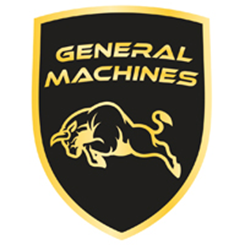
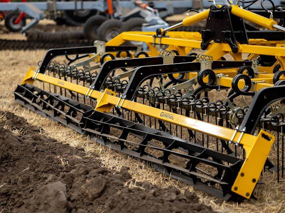
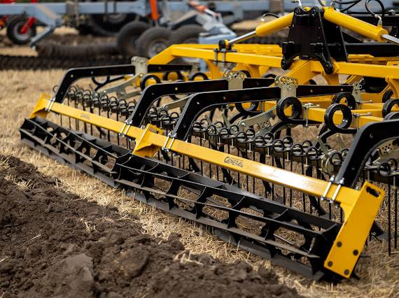

ТОВ «АГРОКУБ»
Код ЄДРПОУ: 41408616
70502, Україна, Запорізька область
вул. Лесі Українки, 45/112
Код ЄДРПОУ: 41408616
70502, Україна, Запорізька область
вул. Лесі Українки, 45/112

+38 067 010 57 75
agrokube.manager4@gmail.com
general-machines.ua
agrokube.manager4@gmail.com
general-machines.ua
Комерційна пропозиція: 6-метровий культиватор КПРС 6.0
Шановний Владислав!
Пропонуємо вам культиватор КПРС 6.0 з робочим захватом 6 метрів, який поєднує передові технології та високу надійність. Ідеальне рішення для тракторів від 140 к.с.
Конструкція стійок
- 26 стійок на вибір: S-подібні (Bellota, Іспанія) або жорсткі DV-стійки 30×30 мм (Bianchi, Італія).
- Розташування у 3 ряди в шахматному порядку гарантує ідеальне перекриття та вирізання підошви без забивання.
- Лапа 260 / 280 мм забезпечує 100% підрізання бур'янів та якісну передпосівну підготовку.
Посилена рама та котки
- Рама з конструкційної профільної труби 80×80×5 мм — запас міцності на роки.
- Унікальна безосьова система котків: запобігає намотуванню рослинних решток, дозволяє працювати по вологому ґрунту без зупинок.
- Котки діаметром 320 мм (варіанти: полоса або труба, пряма або спіральна).
Мобільність та Лафетна система
- Компактна транспортна ширина 2,95 м для зручного пересування дорогами загального користування.
- Транспортні колеса шириною 400 мм винесені за раму для стабільності.
- Синхронний підйом передньої та задньої частини на розворотах.

 

Вартість та умови придбання
| Найменування агрегату | Ціна з ПДВ |
|---|---|
| Культиватор суцільного обробітку КПРС 6.0 |
580 000 грн
|
- Термін виготовлення: до 14 робочих днів (або відвантаження зі складу).
- Доставка в господарство та пусконаладка: ВКЛЮЧЕНА У ВАРТІСТЬ.
- Гарантія: 12 місяців офіційної гарантії від заводу-виробника.
- Підпадає під державну програму компенсації 25% вартості!